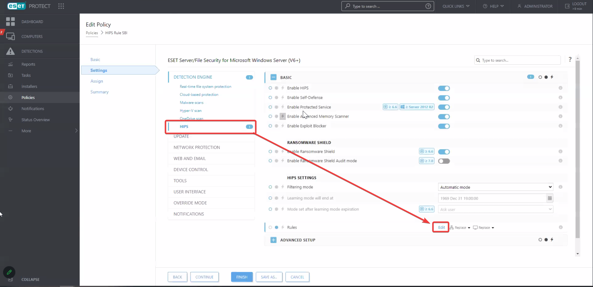
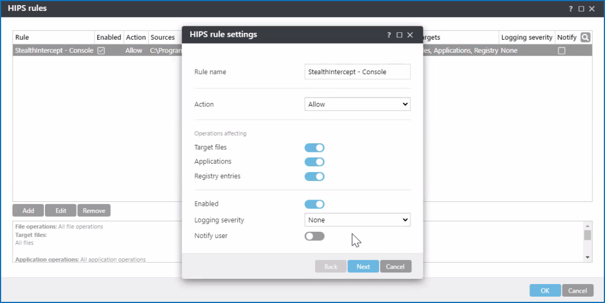
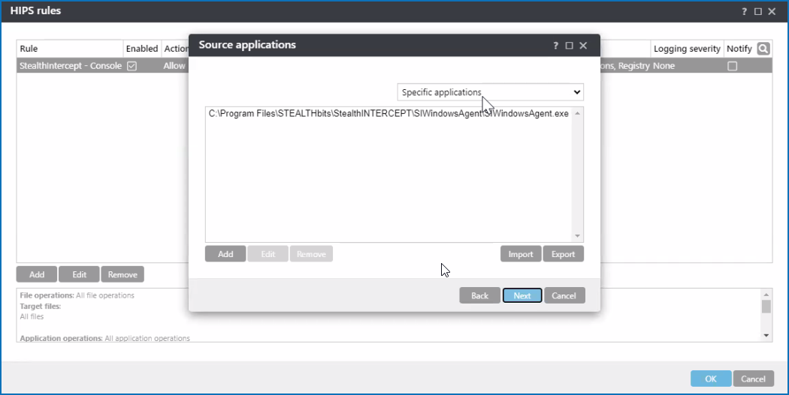
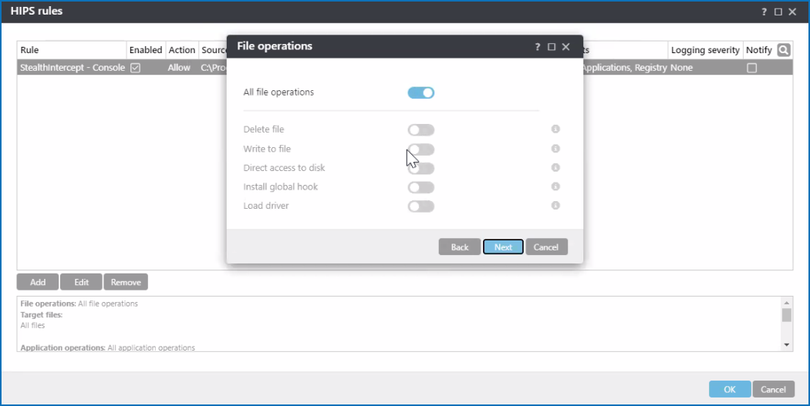
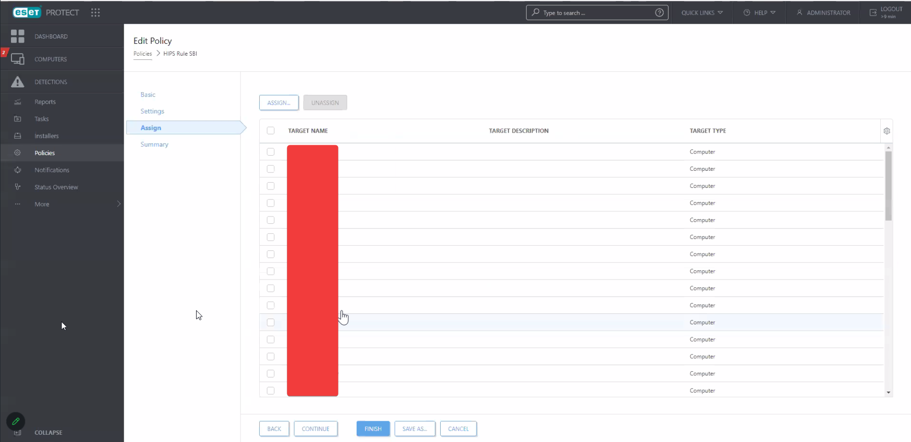
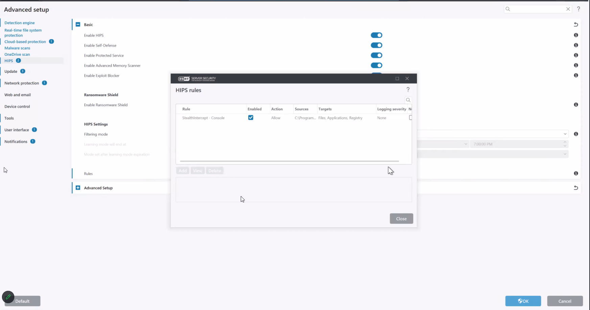

Question
How to set up ESET HIPS rules to allow StealthINTERCEPT SI Agent hook?
Answer
-
In the left pane of your ESET PROTECT Web Console, select Policies. Select the Detection Engine tab > HIPS.
-
Under the Rules section, click Edit.
 -
In the HIPS Rules window, click Add.
-
Specify the Rule name, select Allow for the Action type, and proceed by clicking Next.
 -
Select Specific applications in the dropdown list, and click Add to add the path to
SIWindowsAgent.exe. Refer to the following code block for a default path:C:\Program Files\STEALTHbits\StealthINTERCEPT\SIWindowsAgent\
Proceed to the next step by clicking Next.
 -
Switch the All file operations switch to the on position, and proceed by clicking Next. Click OK to save changes.
 -
Once the configurations steps are completed, proceed to the Assign tab. Assign the new rule to corresponding systems.
 -
The rule should become visible in your ESET host. Refer to the Advanced Setup menu > HIPS tab > Basic section > Rules tab.

NOTE: Once the rule is applied, SI Agent should be restarted.
Related articles
Create a HIPS rule and enforce it on a client workstation using ESET PROTECT (8.x – 10.x) ⸱ ESET 🡥
Enable or disable HIPS in ESET products (15.x–16.x) ⸱ ESET 🡥